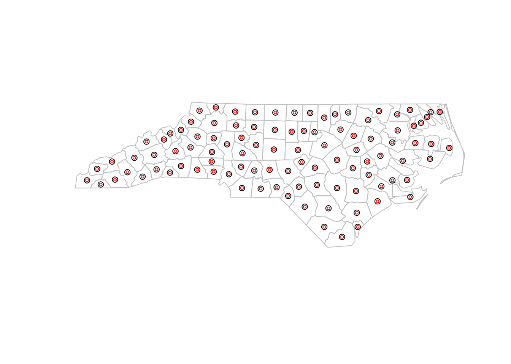
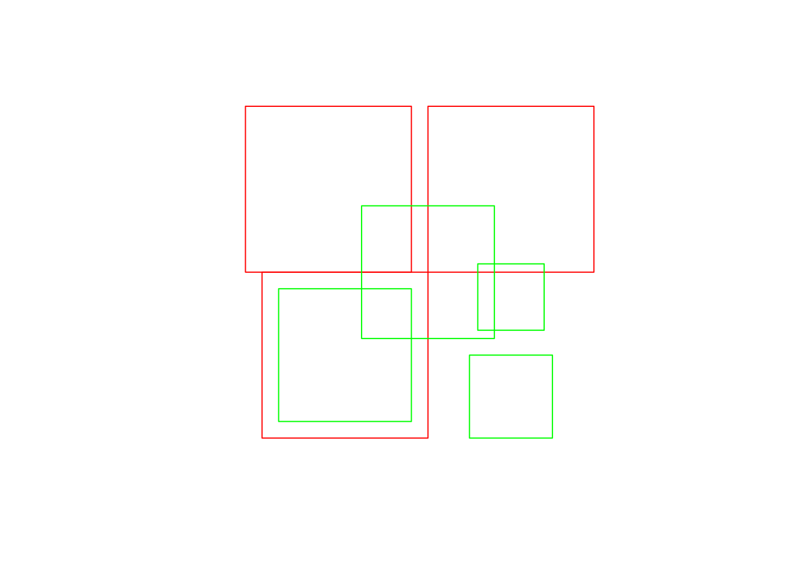
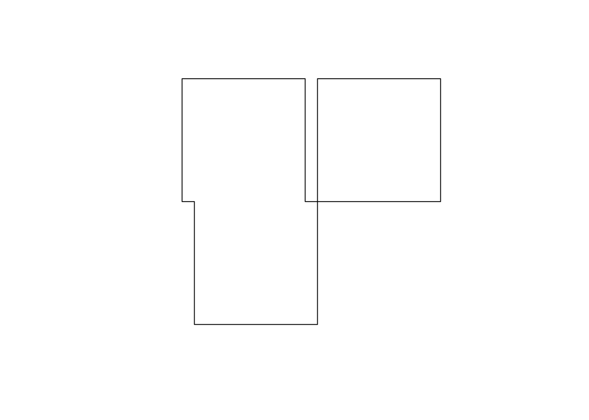
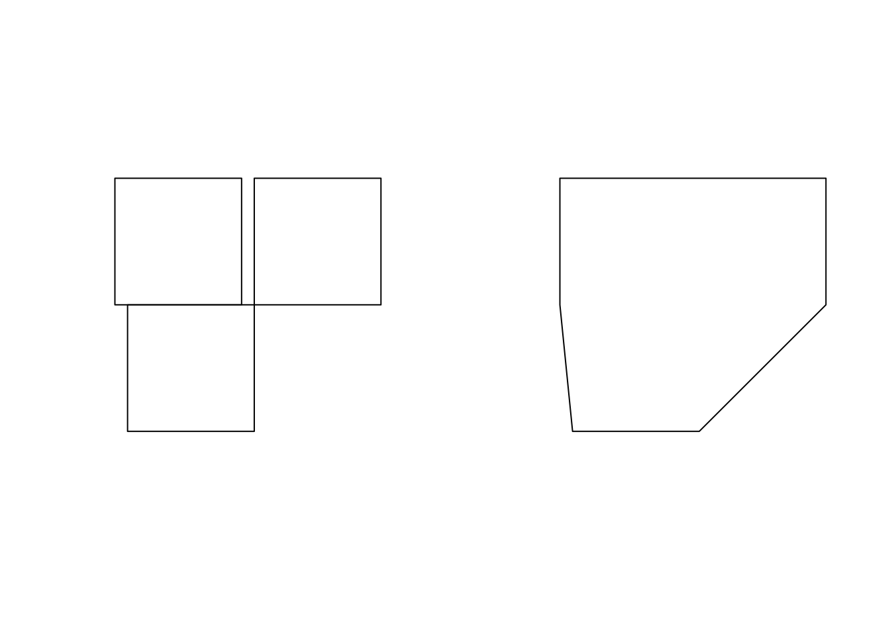
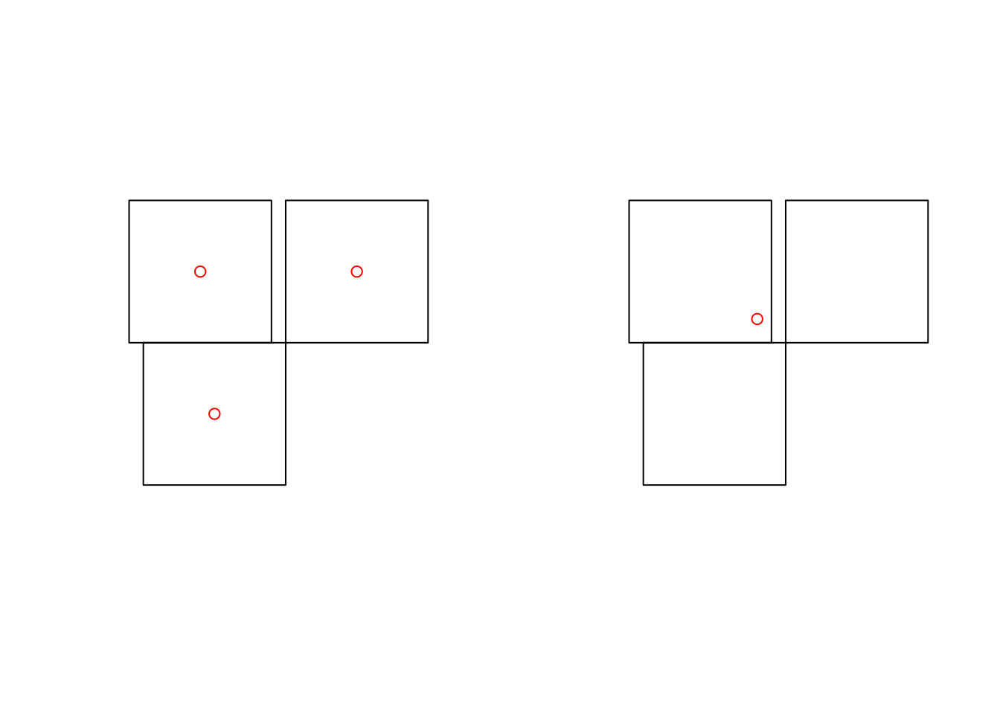
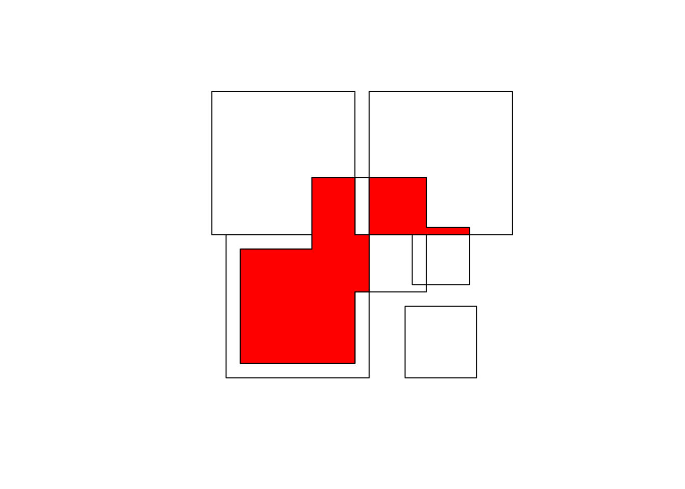
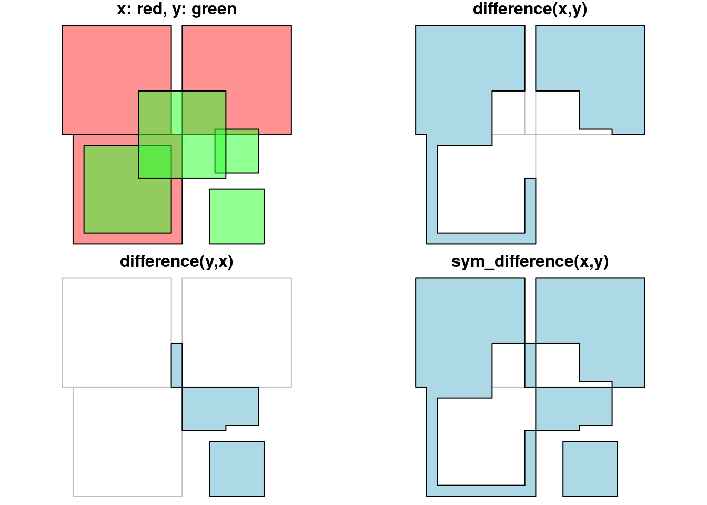
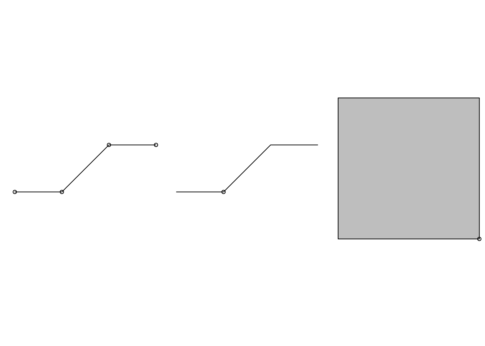
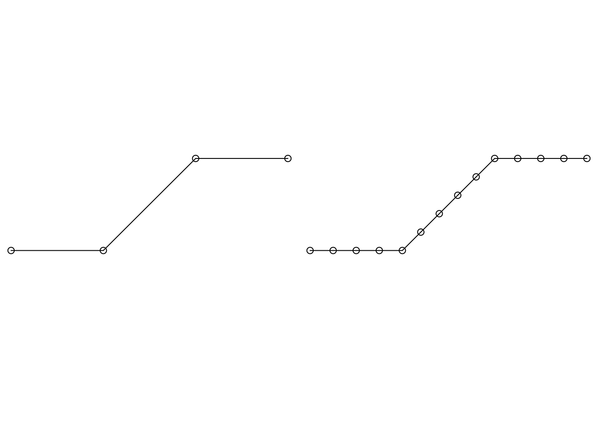

- Manipulating Simple Feature Geometries
This vignetted describes how simple feature geometries can be manipulated, where manipulations include
- type transformations (e.g.,
POLYGONtoMULTIPOLYGON) - affine transformation (shift, scale, rotate)
- transformation into a different coordinate reference system
- geometrical operations, e.g. finding the centroid of a polygon, detecting whether pairs of feature geometries intersect, or find the union (overlap) of two polygons.
Type transformations
This sections discusses how simple feature geometries of one type can be converted to another. For converting lines to polygons, see also st_polygonize below.
For single geometries
For single geometries, st_cast will
- convert from XX to MULTIXX, e.g.
LINESTRINGtoMULTILINESTRING - convert from MULTIXX to XX if MULTIXX has length one (else, it will still convert but warn about loss of information)
- convert from MULTIXX to XX if MULTIXX does not have length one, but it will warn about the loss of information
- convert GEOMETRYCOLLECTION of length one to its component if
Examples of the first three types are
library(sf)
## Loading required package: methods
## Linking to GEOS 3.5.1, GDAL 2.2.1, proj.4 4.9.3
suppressPackageStartupMessages(library(dplyr))
st_point(c(1,1)) %>% st_cast("MULTIPOINT")
## MULTIPOINT (1 1)
st_multipoint(rbind(c(1,1))) %>% st_cast("POINT")
## Warning in st_cast.MULTIPOINT(., "POINT"): point from first coordinate only
## POINT (1 1)
st_multipoint(rbind(c(1,1),c(2,2))) %>% st_cast("POINT")
## Warning in st_cast.MULTIPOINT(., "POINT"): point from first coordinate only
## POINT (1 1)Examples of the fourth type are
st_geometrycollection(list(st_point(c(1,1)))) %>% st_cast("POINT")
## POINT (1 1)For collections of geometry (sfc) and simple feature collections (sf)
It should be noted here that when reading geometries using st_read, the type argument can be used to control the class of the returned geometry:
shp = system.file("shape/nc.shp", package="sf")
class(st_geometry(st_read(shp, quiet = TRUE)))
## [1] "sfc_MULTIPOLYGON" "sfc"
class(st_geometry(st_read(shp, quiet = TRUE, type = 3)))
## [1] "sfc_POLYGON" "sfc"
class(st_geometry(st_read(shp, quiet = TRUE, type = 1)))
## [1] "sfc_GEOMETRY" "sfc"This option is handled by the GDAL library; in case of failure to convert to the target type, the original types are returned, which in this case is a mix of POLYGON and MULTIPOLYGON geometries, leading to a GEOMETRY as superclass. When we try to read multipolygons as polygons, all secondary rings of multipolygons get lost.
When functions return objects with mixed geometry type (GEOMETRY), downstream functions such as st_write may have difficulty handling them. For some of these cases, st_cast may help modifying their type. For sets of geometry objects (sfc) and simple feature sets (sf),st_cast` can be used by specifying the target type, or without specifying it.
ls <- st_linestring(rbind(c(0,0),c(1,1),c(2,1)))
mls <- st_multilinestring(list(rbind(c(2,2),c(1,3)), rbind(c(0,0),c(1,1),c(2,1))))
(sfc <- st_sfc(ls,mls))
## Geometry set for 2 features
## geometry type: GEOMETRY
## dimension: XY
## bbox: xmin: 0 ymin: 0 xmax: 2 ymax: 3
## epsg (SRID): NA
## proj4string: NA
## LINESTRING (0 0, 1 1, 2 1)
## MULTILINESTRING ((2 2, 1 3), (0 0, 1 1, 2 1))
st_cast(sfc, "MULTILINESTRING")
## Geometry set for 2 features
## geometry type: MULTILINESTRING
## dimension: XY
## bbox: xmin: 0 ymin: 0 xmax: 2 ymax: 3
## epsg (SRID): NA
## proj4string: NA
## MULTILINESTRING ((0 0, 1 1, 2 1))
## MULTILINESTRING ((2 2, 1 3), (0 0, 1 1, 2 1))
sf <- st_sf(a = 5:4, geom = sfc)
st_cast(sf, "MULTILINESTRING")
## Simple feature collection with 2 features and 1 field
## geometry type: MULTILINESTRING
## dimension: XY
## bbox: xmin: 0 ymin: 0 xmax: 2 ymax: 3
## epsg (SRID): NA
## proj4string: NA
## a geometry
## 1 5 MULTILINESTRING ((0 0, 1 1,...
## 2 4 MULTILINESTRING ((2 2, 1 3)...When no target type is given, st_cast tries to be smart for two cases:
- if the class of the object is
GEOMETRY, and all elements are of identical type, and - if all elements are length-one
GEOMETRYCOLLECTIONobjects, in which caseGEOMETRYCOLLECTIONobjects are replaced by their content (which may be aGEOMETRYmix again)
Examples are:
ls <- st_linestring(rbind(c(0,0),c(1,1),c(2,1)))
mls1 <- st_multilinestring(list(rbind(c(2,2),c(1,3)), rbind(c(0,0),c(1,1),c(2,1))))
mls2 <- st_multilinestring(list(rbind(c(4,4),c(4,3)), rbind(c(2,2),c(2,1),c(3,1))))
(sfc <- st_sfc(ls,mls1,mls2))
## Geometry set for 3 features
## geometry type: GEOMETRY
## dimension: XY
## bbox: xmin: 0 ymin: 0 xmax: 4 ymax: 4
## epsg (SRID): NA
## proj4string: NA
## LINESTRING (0 0, 1 1, 2 1)
## MULTILINESTRING ((2 2, 1 3), (0 0, 1 1, 2 1))
## MULTILINESTRING ((4 4, 4 3), (2 2, 2 1, 3 1))
class(sfc[2:3])
## [1] "sfc_MULTILINESTRING" "sfc"
class(st_cast(sfc[2:3]))
## [1] "sfc_MULTILINESTRING" "sfc"
gc1 <- st_geometrycollection(list(st_linestring(rbind(c(0,0),c(1,1),c(2,1)))))
gc2 <- st_geometrycollection(list(st_multilinestring(list(rbind(c(2,2),c(1,3)), rbind(c(0,0),c(1,1),c(2,1))))))
gc3 <- st_geometrycollection(list(st_multilinestring(list(rbind(c(4,4),c(4,3)), rbind(c(2,2),c(2,1),c(3,1))))))
(sfc <- st_sfc(gc1,gc2,gc3))
## Geometry set for 3 features
## geometry type: GEOMETRYCOLLECTION
## dimension: XY
## bbox: xmin: 0 ymin: 0 xmax: 4 ymax: 4
## epsg (SRID): NA
## proj4string: NA
## GEOMETRYCOLLECTION (LINESTRING (0 0, 1 1, 2 1))
## GEOMETRYCOLLECTION (MULTILINESTRING ((2 2, 1 3)...
## GEOMETRYCOLLECTION (MULTILINESTRING ((4 4, 4 3)...
class(st_cast(sfc))
## [1] "sfc_GEOMETRY" "sfc"
class(st_cast(st_cast(sfc), "MULTILINESTRING"))
## [1] "sfc_MULTILINESTRING" "sfc"Affine transformations
Affine transformations are transformations of the type \(f(x) = xA + b\), where matrix \(A\) is used to flatten, scale and/or rotate, and \(b\) to translate \(x\). Low-level examples are:
(p = st_point(c(0,2)))
## POINT (0 2)
p + 1
## POINT (1 3)
p + c(1,2)
## POINT (1 4)
p + p
## POINT (0 4)
p * p
## POINT (0 4)
rot = function(a) matrix(c(cos(a), sin(a), -sin(a), cos(a)), 2, 2)
p * rot(pi/4)
## POINT (1.414214 1.414214)
p * rot(pi/2)
## POINT (2 1.224647e-16)
p * rot(pi)
## POINT (2.449294e-16 -2)Just to make the point, we can for instance rotate the counties of North Carolina 90 degrees clockwise around their centroid, and shrink them to 75% of their original size:
nc = st_read(system.file("shape/nc.shp", package="sf"), quiet = TRUE)
ncg = st_geometry(nc)
plot(ncg, border = 'grey')
cntrd = st_centroid(ncg)
## Warning in st_centroid.sfc(ncg): st_centroid does not give correct
## centroids for longitude/latitude data
ncg2 = (ncg - cntrd) * rot(pi/2) * .75 + cntrd
plot(ncg2, add = TRUE)
plot(cntrd, col = 'red', add = TRUE, cex = .5)
Coordinate reference systems conversion and transformation
Getting and setting coordinate reference systems of sf objects
The coordinate reference system of objects of class sf or sfc is obtained by st_crs, and replaced by st_crs<-:
library(sf)
geom = st_sfc(st_point(c(0,1)), st_point(c(11,12)))
s = st_sf(a = 15:16, geometry = geom)
st_crs(s)
## Coordinate Reference System: NA
s1 = s
st_crs(s1) <- 4326
st_crs(s1)
## Coordinate Reference System:
## EPSG: 4326
## proj4string: "+proj=longlat +datum=WGS84 +no_defs"
s2 = s
st_crs(s2) <- "+proj=longlat +datum=WGS84"
all.equal(s1, s2)
## [1] TRUEan alternative, more pipe-friendly version of st_crs<- is
s1 %>% st_set_crs(4326)
## Simple feature collection with 2 features and 1 field
## geometry type: POINT
## dimension: XY
## bbox: xmin: 0 ymin: 1 xmax: 11 ymax: 12
## epsg (SRID): 4326
## proj4string: +proj=longlat +datum=WGS84 +no_defs
## a geometry
## 1 15 POINT (0 1)
## 2 16 POINT (11 12)Coordinate reference system transformations
If we change the coordinate reference system from one non-missing value into another non-missing value, the crs is is changed without modifying any coordinates, but a warning is issued that this did not reproject values:
s3 <- s1 %>% st_set_crs(4326) %>% st_set_crs(3857)
## Warning: st_crs<- : replacing crs does not reproject data; use st_transform
## for thatA cleaner way to do this that better expresses intention and does not generate this warning is to first wipe the CRS by assigning it a missing value, and then setting it to the intended value.
s3 <- s1 %>% st_set_crs(NA) %>% st_set_crs(3857)To carry out a coordinate conversion or transformation, we use st_transform
s3 <- s1 %>% st_transform(3857)
s3
## Simple feature collection with 2 features and 1 field
## geometry type: POINT
## dimension: XY
## bbox: xmin: 0 ymin: 111325.1 xmax: 1224514 ymax: 1345708
## epsg (SRID): 3857
## proj4string: +proj=merc +a=6378137 +b=6378137 +lat_ts=0.0 +lon_0=0.0 +x_0=0.0 +y_0=0 +k=1.0 +units=m +nadgrids=@null +wktext +no_defs
## a geometry
## 1 15 POINT (0 111325.1)
## 2 16 POINT (1224514 1345708)for which we see that coordinates are actually modified (projected).
Geometrical operations
All geometrical operations st_op(x) or or st_op2(x,y) work both for sf objects as well as sfc objects x and y; since the operations work on the geometries, the non-geometries parts of an sf object are simply discarded. Also, all binary operations st_op2(x,y) called with a single argument, as st_op2(x), are handled as st_op2(x,x).
We will illustrate the geometrical operations on a very simple dataset:
b0 = st_polygon(list(rbind(c(-1,-1), c(1,-1), c(1,1), c(-1,1), c(-1,-1))))
b1 = b0 + 2
b2 = b0 + c(-0.2, 2)
x = st_sfc(b0, b1, b2)
a0 = b0 * 0.8
a1 = a0 * 0.5 + c(2, 0.7)
a2 = a0 + 1
a3 = b0 * 0.5 + c(2, -0.5)
y = st_sfc(a0,a1,a2,a3)
plot(x, border = 'red')
plot(y, border = 'green', add = TRUE)
Unary operations
st_is_valid returns whether polygon geometries are topologically valid:
b0 = st_polygon(list(rbind(c(-1,-1), c(1,-1), c(1,1), c(-1,1), c(-1,-1))))
b1 = st_polygon(list(rbind(c(-1,-1), c(1,-1), c(1,1), c(0,-1), c(-1,-1))))
st_is_valid(st_sfc(b0,b1))
## Warning in evalq((function (..., call. = TRUE, immediate. = FALSE,
## noBreaks. = FALSE, : Self-intersection at or near point -1 -1
## [1] TRUE FALSEand st_is_simple whether line geometries are simple:
s = st_sfc(st_linestring(rbind(c(0,0), c(1,1))),
st_linestring(rbind(c(0,0), c(1,1),c(0,1),c(1,0))))
st_is_simple(s)
## [1] TRUE FALSEst_area returns the area of polygon geometries, st_length the length of line geometries:
st_area(x)
## [1] 4 4 4
st_area(st_sfc(st_point(c(0,0))))
## [1] 0
st_length(st_sfc(st_linestring(rbind(c(0,0),c(1,1),c(1,2))), st_linestring(rbind(c(0,0),c(1,0)))))
## [1] 2.414214 1.000000
st_length(st_sfc(st_multilinestring(list(rbind(c(0,0),c(1,1),c(1,2))),rbind(c(0,0),c(1,0))))) # ignores 2nd part!
## [1] 2.414214Binary operations: distance and relate
st_distance computes the shortest distance matrix between geometries; this is a dense matrix:
st_distance(x,y)
## [,1] [,2] [,3] [,4]
## [1,] 0.0000000 0.6 0 0.500000
## [2,] 0.2828427 0.0 0 1.000000
## [3,] 0.2000000 0.8 0 1.220656st_relate returns a dense character matrix with the DE9-IM relationships between each pair of geometries:
st_relate(x,y)
## [,1] [,2] [,3] [,4]
## [1,] "212FF1FF2" "FF2FF1212" "212101212" "FF2FF1212"
## [2,] "FF2FF1212" "212101212" "212101212" "FF2FF1212"
## [3,] "FF2FF1212" "FF2FF1212" "212101212" "FF2FF1212"element [i,j] of this matrix has nine characters, refering to relationship between x[i] and y[j], encoded as \(I_xI_y,I_xB_y,I_xE_y,B_xI_y,B_xB_y,B_xE_y,E_xI_y,E_xB_y,E_xE_y\) where \(I\) refers to interior, \(B\) to boundary, and \(B\) to exterior, and e.g. \(B_xI_y\) the dimensionality of the intersection of the the boundary \(B_x\) of x[i] and the interior \(I_y\) of y[j], which is one of {0,1,2,F}, indicating zero-, one-, two-dimension intersection, and (F) no intersection, respectively.
Binary logical operations:
Binary logical operations return either a sparse matrix
st_intersects(x,y)
## Sparse geometry binary predicate list of length 3, where the predicate was `intersects'
## 1: 1, 3
## 2: 2, 3
## 3: 3or a dense matrix
st_intersects(x, x, sparse = FALSE)
## [,1] [,2] [,3]
## [1,] TRUE TRUE TRUE
## [2,] TRUE TRUE FALSE
## [3,] TRUE FALSE TRUE
st_intersects(x, y, sparse = FALSE)
## [,1] [,2] [,3] [,4]
## [1,] TRUE FALSE TRUE FALSE
## [2,] FALSE TRUE TRUE FALSE
## [3,] FALSE FALSE TRUE FALSEwhere list element i of a sparse matrix contains the indices of the TRUE elements in row i of the the dense matrix. For large geometry sets, dense matrices take up a lot of memory and are mostly filled with FALSE values, hence the default is to return a sparse matrix.
st_intersects returns for every geometry pair whether they intersect (dense matrix), or which elements intersect (sparse).
Other binary predicates include (using sparse for readability):
st_disjoint(x, y, sparse = FALSE)
## [,1] [,2] [,3] [,4]
## [1,] FALSE TRUE FALSE TRUE
## [2,] TRUE FALSE FALSE TRUE
## [3,] TRUE TRUE FALSE TRUE
st_touches(x, y, sparse = FALSE)
## [,1] [,2] [,3] [,4]
## [1,] FALSE FALSE FALSE FALSE
## [2,] FALSE FALSE FALSE FALSE
## [3,] FALSE FALSE FALSE FALSE
st_crosses(s, s, sparse = FALSE)
## [,1] [,2]
## [1,] FALSE FALSE
## [2,] FALSE FALSE
st_within(x, y, sparse = FALSE)
## [,1] [,2] [,3] [,4]
## [1,] FALSE FALSE FALSE FALSE
## [2,] FALSE FALSE FALSE FALSE
## [3,] FALSE FALSE FALSE FALSE
st_contains(x, y, sparse = FALSE)
## [,1] [,2] [,3] [,4]
## [1,] TRUE FALSE FALSE FALSE
## [2,] FALSE FALSE FALSE FALSE
## [3,] FALSE FALSE FALSE FALSE
st_overlaps(x, y, sparse = FALSE)
## [,1] [,2] [,3] [,4]
## [1,] FALSE FALSE TRUE FALSE
## [2,] FALSE TRUE TRUE FALSE
## [3,] FALSE FALSE TRUE FALSE
st_equals(x, y, sparse = FALSE)
## [,1] [,2] [,3] [,4]
## [1,] FALSE FALSE FALSE FALSE
## [2,] FALSE FALSE FALSE FALSE
## [3,] FALSE FALSE FALSE FALSE
st_covers(x, y, sparse = FALSE)
## [,1] [,2] [,3] [,4]
## [1,] TRUE FALSE FALSE FALSE
## [2,] FALSE FALSE FALSE FALSE
## [3,] FALSE FALSE FALSE FALSE
st_covered_by(x, y, sparse = FALSE)
## [,1] [,2] [,3] [,4]
## [1,] FALSE FALSE FALSE FALSE
## [2,] FALSE FALSE FALSE FALSE
## [3,] FALSE FALSE FALSE FALSE
st_covered_by(y, y, sparse = FALSE)
## [,1] [,2] [,3] [,4]
## [1,] TRUE FALSE FALSE FALSE
## [2,] FALSE TRUE FALSE FALSE
## [3,] FALSE FALSE TRUE FALSE
## [4,] FALSE FALSE FALSE TRUE
st_equals_exact(x, y,0.001, sparse = FALSE)
## [,1] [,2] [,3] [,4]
## [1,] FALSE FALSE FALSE FALSE
## [2,] FALSE FALSE FALSE FALSE
## [3,] FALSE FALSE FALSE FALSEOperations returning a geometry
u = st_union(x)
plot(u)
par(mfrow=c(1,2), mar = rep(0,4))
plot(st_buffer(u, 0.2))
plot(u, border = 'red', add = TRUE)
plot(st_buffer(u, 0.2), border = 'grey')
plot(u, border = 'red', add = TRUE)
plot(st_buffer(u, -0.2), add = TRUE)
plot(st_boundary(x))
par(mfrow = c(1:2))
plot(st_convex_hull(x))
plot(st_convex_hull(u))
par(mfrow = c(1,1))par(mfrow=c(1,2))
plot(x)
plot(st_centroid(x), add = TRUE, col = 'red')
plot(x)
plot(st_centroid(u), add = TRUE, col = 'red')
The intersection of two geometries is the geometry covered by both; it is obtained by st_intersection:
plot(x)
plot(y, add = TRUE)
plot(st_intersection(st_union(x),st_union(y)), add = TRUE, col = 'red')
To get everything but the intersection, use st_difference or st_sym_difference`:
par(mfrow=c(2,2), mar = c(0,0,1,0))
plot(x, col = '#ff333388');
plot(y, add=TRUE, col='#33ff3388')
title("x: red, y: green")
plot(x, border = 'grey')
plot(st_difference(st_union(x),st_union(y)), col = 'lightblue', add = TRUE)
title("difference(x,y)")
plot(x, border = 'grey')
plot(st_difference(st_union(y),st_union(x)), col = 'lightblue', add = TRUE)
title("difference(y,x)")
plot(x, border = 'grey')
plot(st_sym_difference(st_union(y),st_union(x)), col = 'lightblue', add = TRUE)
title("sym_difference(x,y)")
Function st_segmentize adds points to straight line sections of a lines or polygon object:
par(mfrow=c(1,3),mar=c(1,1,0,0))
pts = rbind(c(0,0),c(1,0),c(2,1),c(3,1))
ls = st_linestring(pts)
plot(ls)
points(pts)
ls.seg = st_segmentize(ls, 0.3)
plot(ls.seg)
pts = ls.seg
points(pts)
pol = st_polygon(list(rbind(c(0,0),c(1,0),c(1,1),c(0,1),c(0,0))))
pol.seg = st_segmentize(pol, 0.3)
plot(pol.seg, col = 'grey')
points(pol.seg[[1]])
Function st_polygonize polygonizes a multilinestring, as far as the points form a closed polygon:
par(mfrow=c(1,2),mar=c(0,0,1,0))
mls = st_multilinestring(list(matrix(c(0,0,0,1,1,1,0,0),,2,byrow=TRUE)))
x = st_polygonize(mls)
plot(mls, col = 'grey')
title("multilinestring")
plot(x, col = 'grey')
title("polygon")